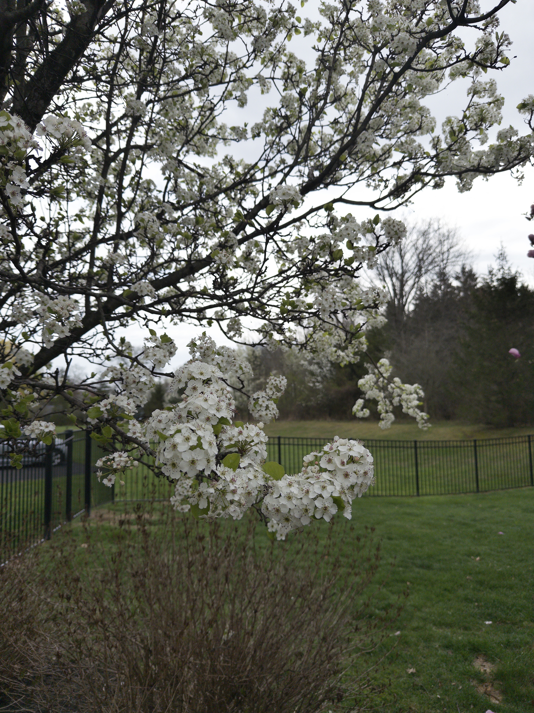
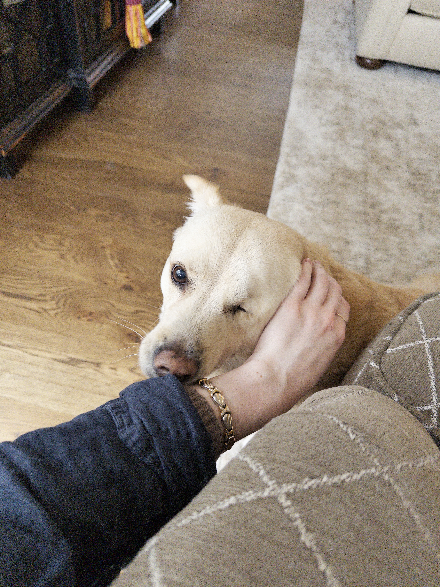
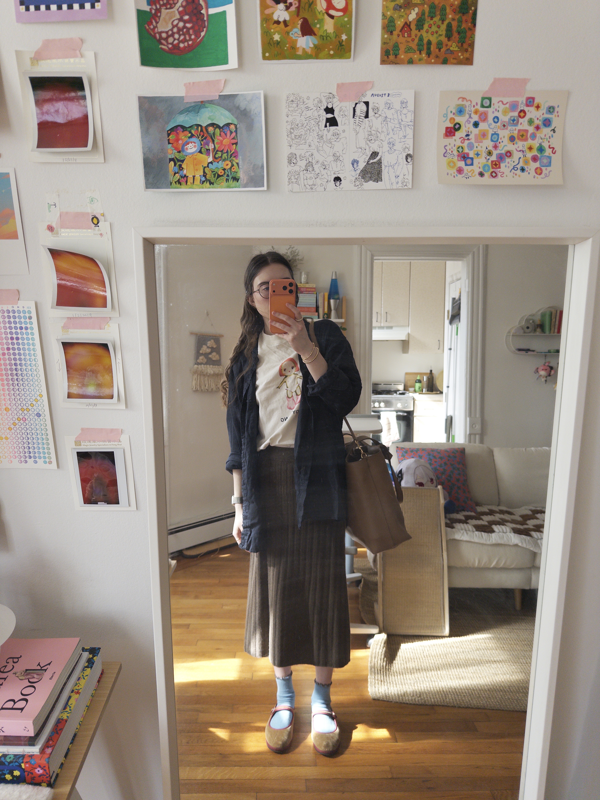
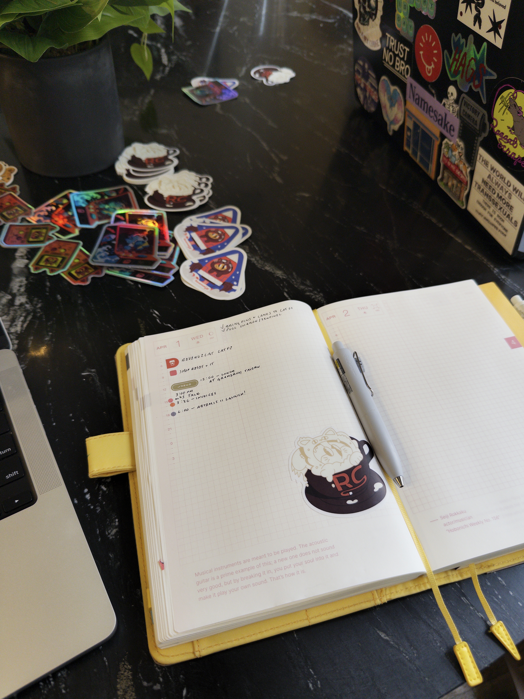

Trees are blooming! The sun is out! It feels like a miracle. I went home to visit my family for Easter last weekend and it was still a little cold and rainy, but the pear tree in the backyard was blossoming, and the magnolia tree was on its way.


Also went to the RevenueCat event in New York to hear mb’s talk, and remembered that it is fun being around people and hearing about what they’re working on or excited about. Networking is not my strong suit (I’m shy!), but I do like to tag along with Lickability folks and meet new people. I never know what to do when someone asks for my LinkedIn QR code, though — I guess I should download the app.


things i’m doing
- Going to Chicago soon for Deep Dish Swift with mb!
- Still playing an awful lot of Reverse: 1999. I’ve been trying to catch up to the story by playing through some of the old events, and I’m finally going to start Chapter 9 soon. Hoping I can pull a quick Willow from the next Reveries banner so I can start building a Poison team.
- Saw Project Hail Mary last week — I loved it. Thought the soundtrack was really nice, too. Amaze amaze amaze :)